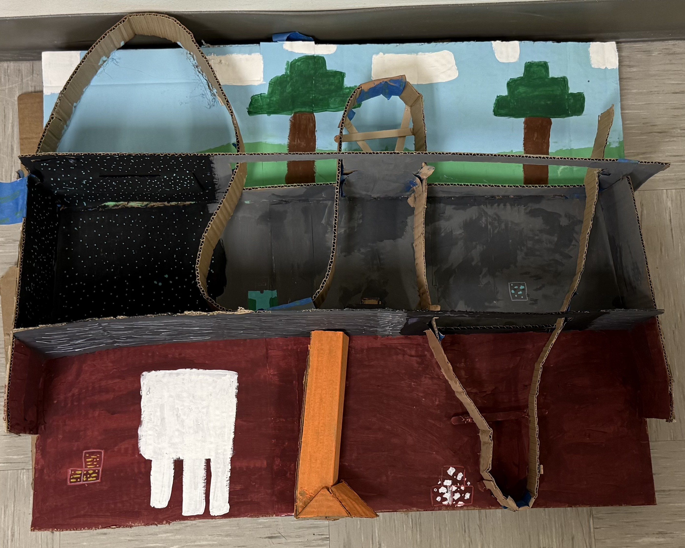
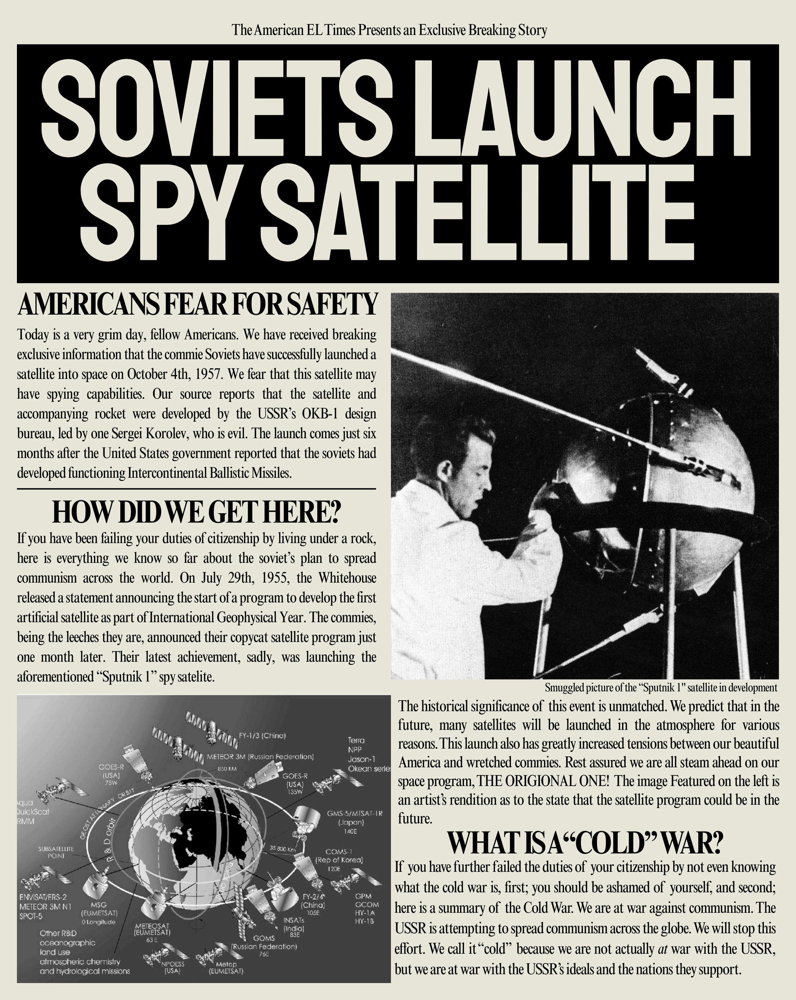
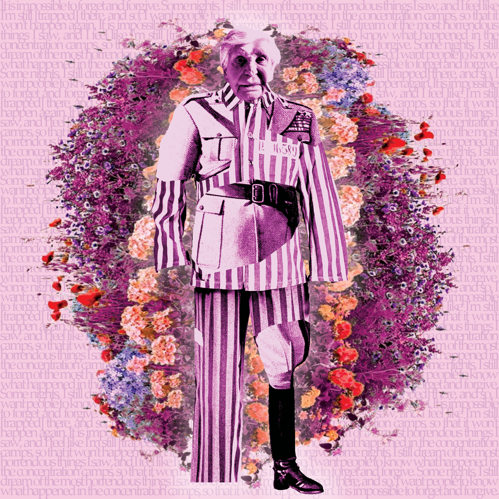
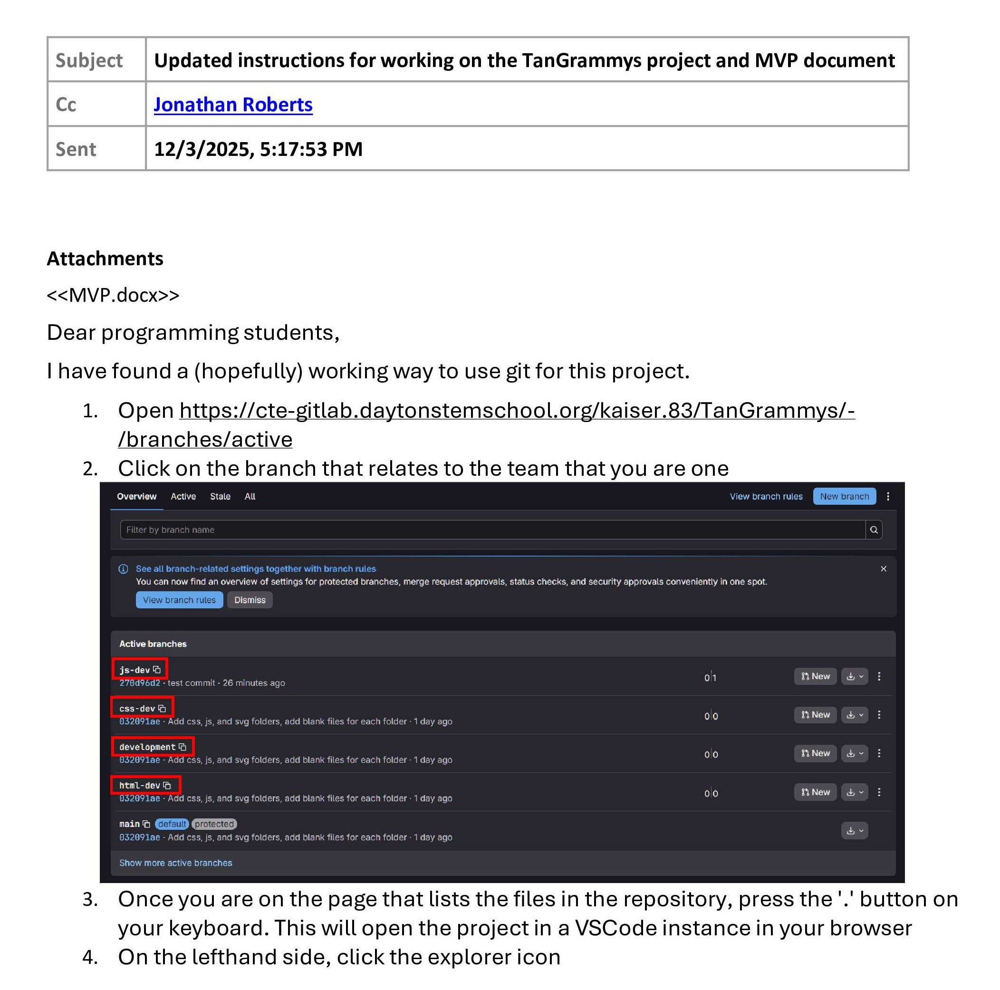
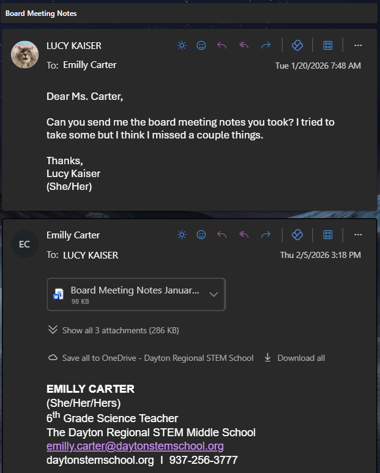

Collaboration
In the roller coaster project, I collaborated with my 4 group members to make our Minecraft-themed roller coaster.

Communication
While working on the newspaper project, I communicated back and forth with my partner to ensure we both had the same vision for what we wanted to create.

Creativity
For the Holocaust art project, I used creativity to make a digital collage of Holocaust survivor, Lucy Salani.

Persistence
While working as the project manager for the TanGrammys project, I used persistence to overcome difficulties in operating the software we were using.

Inquiry
This year, to show inquiry, I started attending the school board meetings to get a better idea as to how my school functions.
